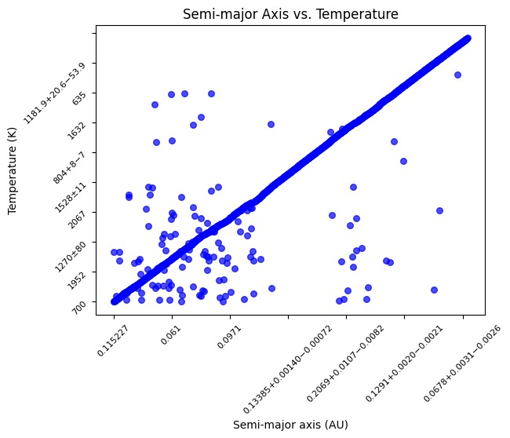

According to NASA, an exoplanet is any planet beyond our Solar System. Exoplanets orbit other stars, but there are also "rogue planets" which do not orbit any star. Some of these orbiting planets fall within the "habitable zone" of their host star, which is the distance from a star at which water on its liquid form could exist on the planet's surface.

This research and analysis is guided by the following question regarding exoplanets:
For this project this Kaggle dataset was used. The relevant variables provided by these dataset were:
In order to attend this question we can visualize the characteristics that make exoplanets habitable with python's matplotlib seaborn. First, we will subdivide the "big" question into two smaller ones:
To estimate whether a planet might be habitable we can use the semimajor axis of the planet―the distance from the center of the elliptical orbit of the planet to the farthest point on the perimeter of the orbit―and the host star's temperature. With these two variables we can use the concept of the habitable zone (HZ). The HZ is the range of distances from a star where a planet could have liquid water on its surface, given sufficient atmospheric pressure.
If we plot these two variables we can see that they have a linear correlation with some outliers. Click on the image for interactivity with the plot.
